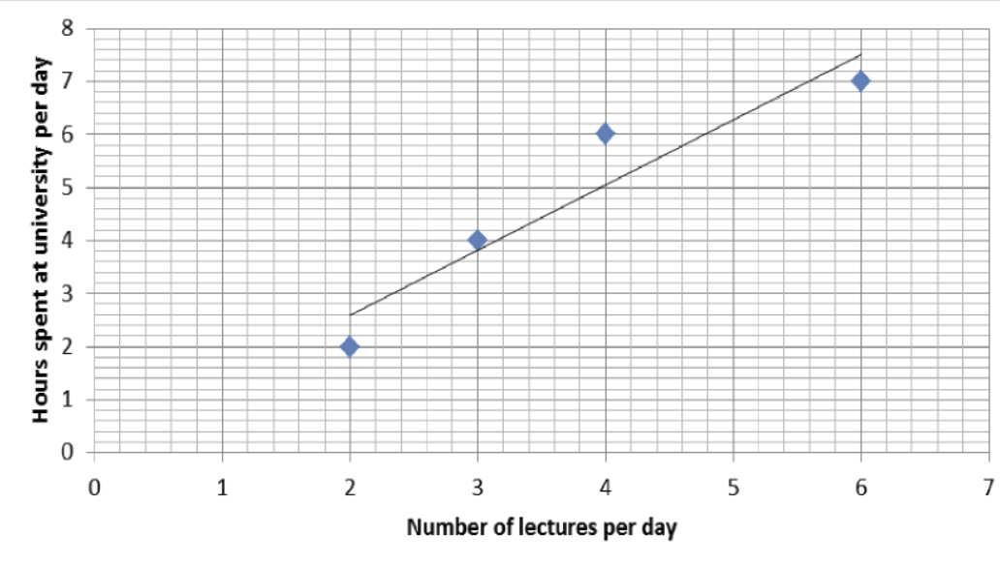
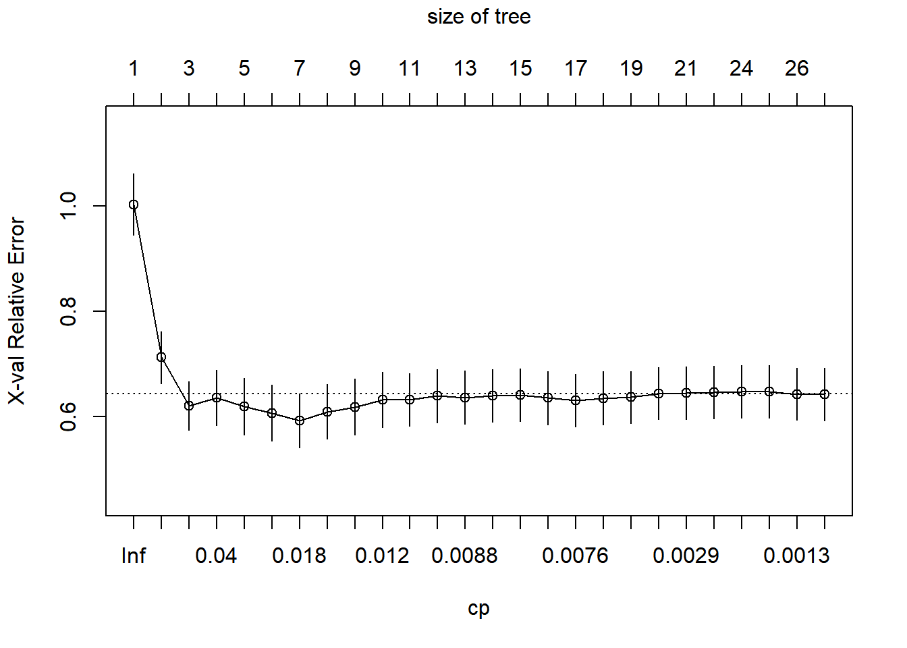
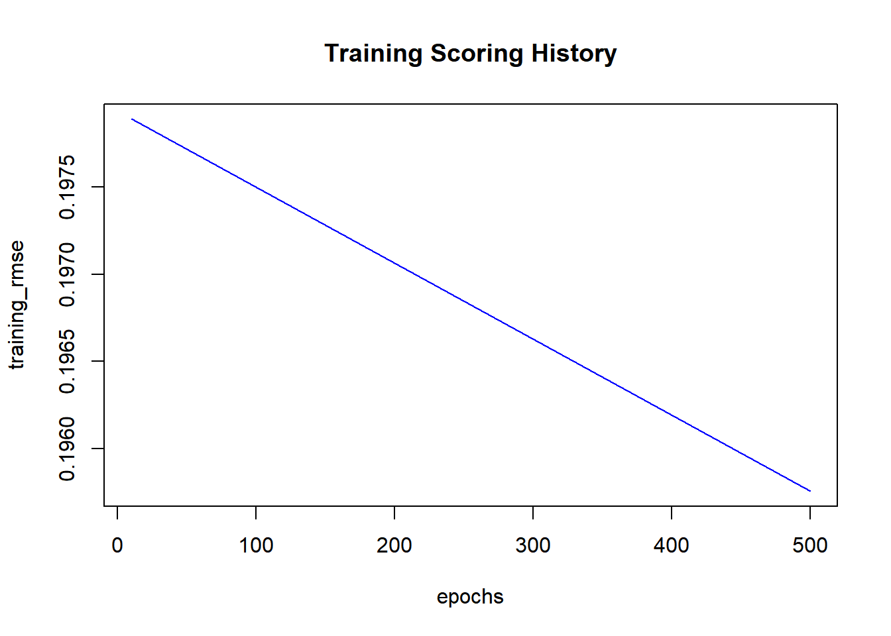

Machine Learning Regression
1 Introduction
1.1 Definition of Machine Learning
Machine learning is a study, design, and development of models and algorithms that enable computers to learn from data ad make predictions or decisions.
Machine learning uses algorithms and computational power to determine if a relationships exists between data and labels.
In machine learning, a computer program is said to learn from experience (E), with respect to some task (T), and some performance measure (P), if its performance on (T), as measured by (P), improve with experience (E).
1.2 Different Tasks of Machine Learning
1.2.1 Supervised Learning
Supervised learning is a type of machine learning where the model is trained on a labeled dataset. The goal is to learn a mapping from inputs to outputs based on the provided labels. There are two primary tasks under supervised learning: classification and regression.
1.2.1.1 Classification
Classification is the task of predicting a category or class label for a given input. The model is trained on a dataset where each example is labeled with the correct class. The objective is to learn from these examples and accurately classify new, unseen data.
An example of classification is dividing the socks by color. In this scenario, the model could be trained to recognize different colors of socks. Given a pile of socks, the model would sort them into categories such as red, blue, green, etc.
This task is useful in various applications, such as spam detection in emails (classifying emails as spam or not spam), handwriting recognition (classifying handwritten digits), and medical diagnosis (classifying whether a patient has a particular disease based on symptoms).
1.2.1.2 Regression
Regression is the task of predicting a continuous value for a given input. Unlike classification, which predicts discrete labels, regression predicts numerical values.
An example of regression is dividing the ties by length. In this case, the model could be trained to predict the length of ties based on features such as brand, fabric, or style. Given a set of ties, the model would estimate their lengths and sort them accordingly.
Regression tasks are common in various fields, such as predicting house prices based on features like location, size, and number of bedrooms, forecasting stock prices based on historical data, and estimating the amount of rainfall based on weather conditions.
1.2.2 Unsupervised Learning
Unsupervised learning deals with unlabeled data, meaning the model tries to learn the patterns and structure from the data without any specific guidance on what the outputs should be. There are several tasks under unsupervised learning, including clustering, association, and dimension reduction.
1.2.2.1 Clustering
Clustering is a technique used to group similar data points based on their characteristics. This is useful in various scenarios where identifying natural groupings in data can provide insights or aid decision-making.
Suppose you have a pile of clothes, and you want to organize them by similarity, such as color, type, or fabric. Clustering algorithms can automatically group similar items together, making it easier to organize and manage your wardrobe. For example, all the red shirts might be grouped in one cluster, while all the blue jeans might be in another.
1.2.2.2 Association
Association learning identifies relationships between variables in a dataset. It is often used to find patterns or associations between different items that occur together.
For example, in the context of clothing, association can help find hidden dependencies, such as which items of clothing are often worn together. If you frequently wear a certain shirt with a specific pair of pants, an association learning algorithm can identify this pattern.
This information can be useful for making recommendations or optimizing your wardrobe choices. For instance, a system could suggest pairing items that you have not previously considered, based on the associations it has learned from your past choices.
1.2.2.3 Dimension Reduction
Dimension reduction is a process used to reduce the number of variables under consideration, making the data simpler to analyze and visualize. This is particularly helpful when dealing with high-dimensional data.
In the context of clothing, dimension reduction can help generalize and simplify the task of making outfits from a large collection of clothes. By reducing the complexity of the data, you can identify the most important features that contribute to making good outfits.
For example, you might reduce the data to a few key dimensions such as color, style, and occasion, which can help you mix and match clothing items more effectively to create the best outfits from your given clothes.
1.2.3 Reinforcement Learning
Reinforcement learning involves training models to make sequences of decisions by rewarding desired behaviors and penalizing undesired ones. This type of learning is inspired by behavioral psychology and is used in environments where an agent interacts with its surroundings.
An example of reinforcement learning is training a robot to navigate a maze. The robot receives positive rewards for making progress towards the exit and negative rewards for hitting walls or going in the wrong direction. Over time, the robot learns to find the most efficient path through the maze.
Another example is in gaming, where reinforcement learning agents can learn to play games like chess by receiving rewards for winning and penalties for losing. They can increase their performance levels by continuously improving their strategies based on feedback from their actions.
2 Linear Regression Analysis
To build and evaluate a linear regression model to predict the progression of diabetes using various attributes from the dataset.
2.1 Install Required Packages
2.2 Load the Dataset
diabetes <- read.csv("Datasets/diabetes.csv")2.3 Examine the Dataset
str(diabetes)'data.frame': 442 obs. of 11 variables:
$ age : num 0.03808 -0.00188 0.0853 -0.08906 0.00538 ...
$ sex : num 0.0507 -0.0446 0.0507 -0.0446 -0.0446 ...
$ bmi : num 0.0617 -0.0515 0.0445 -0.0116 -0.0364 ...
$ bp : num 0.02187 -0.02633 -0.00567 -0.03666 0.02187 ...
$ s1 : num -0.04422 -0.00845 -0.0456 0.01219 0.00393 ...
$ s2 : num -0.0348 -0.0192 -0.0342 0.025 0.0156 ...
$ s3 : num -0.0434 0.07441 -0.03236 -0.03604 0.00814 ...
$ s4 : num -0.00259 -0.03949 -0.00259 0.03431 -0.00259 ...
$ s5 : num 0.01991 -0.06833 0.00286 0.02269 -0.03199 ...
$ s6 : num -0.01765 -0.0922 -0.02593 -0.00936 -0.04664 ...
$ diabetes: num 151 75 141 206 135 97 138 63 110 310 ...2.4 Split the Data
Split the data into training and testing sets with a ratio of 70:30:
2.5 Build the Linear Regression Model
Create the linear regression model using the training set:
lr.mod <- lm(diabetes ~ ., data = train1)2.6 Summarize the Model
Display the summary of the model to understand the coefficients and residuals:
summary(lr.mod)
Call:
lm(formula = diabetes ~ ., data = train1)
Residuals:
Min 1Q Median 3Q Max
-148.173 -40.545 -3.707 38.469 133.755
Coefficients:
Estimate Std. Error t value Pr(>|t|)
(Intercept) 149.626 3.083 48.528 < 2e-16 ***
age 18.239 72.327 0.252 0.80108
sex -230.349 74.801 -3.079 0.00227 **
bmi 455.902 80.564 5.659 3.58e-08 ***
bp 406.474 75.875 5.357 1.69e-07 ***
s1 -1164.887 498.231 -2.338 0.02005 *
s2 818.387 415.016 1.972 0.04954 *
s3 218.545 245.106 0.892 0.37331
s4 178.686 190.851 0.936 0.34990
s5 846.885 210.294 4.027 7.17e-05 ***
s6 52.409 77.582 0.676 0.49986
---
Signif. codes: 0 '***' 0.001 '**' 0.01 '*' 0.05 '.' 0.1 ' ' 1
Residual standard error: 53.99 on 298 degrees of freedom
Multiple R-squared: 0.5054, Adjusted R-squared: 0.4888
F-statistic: 30.45 on 10 and 298 DF, p-value: < 2.2e-162.7 Evaluate the Model
Perform predictions on the test set and evaluate the model’s performance using RMSE (Root Mean Squared Error):
test1$pred <- predict(lr.mod, newdata = test1)
rmse_value1 <- rmse(test1$diabetes, test1$pred)
print(rmse_value1)[1] 55.56879RMSE: The root mean squared error (RMSE) measures the average deviation of predictions from the actual values. A lower RMSE indicates a better fit of the model.
2.8 Performance Metrics
2.8.1 R-Squared
R-squared, also known as the coefficient of determination, represents the squared correlation between the observed outcome values and the predicted values by the model. It indicates how well the model explains the variability of the response data around its mean. The value of R-squared ranges from 0 to 1:
- Higher R2: Indicates a better fit of the model, meaning it explains a higher proportion of the variance in the outcome variable.
- Lower R2: Indicates a poorer fit, meaning it explains a lower proportion of the variance.
\[ R^2 = 1 - \frac{\sum (y_i - \hat{y}_i)^2}{\sum (y_i - \bar{y})^2} \]
- \(y_i\) are the observed values.
- \(\hat{y}_i\) are the predicted values from the regression model.
- \(\bar{y}\) is the mean of the observed values.
- \(\sum (y_i - \hat{y}_i)^2\) is the sum of the squared residuals (SSR).
- \(\sum (y_i - \bar{y})^2\) is the total sum of squares (SST).
2.8.1.1 Observed Data Points

From the graph, we can see the observed data points are:
- (2, 2)
- (3, 4)
- (4, 6)
- (6, 7)
To calculate R-squared (R²), we need to understand how well the regression line predicts the actual data points. The given equation of the regression line is:
\[ \hat{y} = 0.143 + 1.229x \]
2.8.1.2 Calculate Predicted Values (\(\hat{y}\))
Use the regression line equation to calculate the predicted values for each ( x ):
For \(x = 2\):
\[ \hat{y} = 0.143 + 1.229 \times 2 = 2.601 \ \]
For \(x = 3\):
\[ \hat{y} = 0.143 + 1.229 \times 3 = 3.83 \ \]
For \(x = 4\):
\[ \hat{y} = 0.143 + 1.229 \times 4 = 5.059 \ \]
For \(x = 6\):
\[ \hat{y} = 0.143 + 1.229 \times 6 = 7.517 \ \]
2.8.1.3 Calculate Residuals (Errors)
The residual for each point is the difference between the actual ( y ) value and the predicted ( y ) value:
For (2, 2): \[ r_1 = y_1 - \hat{y}_1 = 2 - 2.601 = -0.601 \]
For (3, 4): \[ r_2 = y_2 - \hat{y}_2 = 4 - 3.83 = 0.17 \]
For (4, 6): \[ r_3 = y_3 - \hat{y}_3 = 6 - 5.059 = 0.941 \]
For (6, 7): \[ r_4 = y_4 - \hat{y}_4 = 7 - 7.517 = -0.517 \]
2.8.1.4 Sum of Squared Residuals (SSR)
Calculate the sum of the squared residuals:
\[ SSR = (-0.601)^2 + (0.17)^2 + (0.941)^2 + (-0.517)^2 = 1.542871 \]
2.8.1.5 Total Sum of Squares (SST)
Calculate the mean of the observed \(y\) values:
\[ \bar{y} = \frac{2 + 4 + 6 + 7}{4} = 4.75 \]
Calculate the total sum of squares:
\[ SST = (2 - 4.75)^2 + (4 - 4.75)^2 + (6 - 4.75)^2 + (7 - 4.75)^2 = 14.75 \]
2.8.1.6 Calculate R-squared (R²)
Finally, calculate R-squared using the formula:
\[ R^2 = 1 - \frac{SSR}{SST} = 1 - \frac{1.542871}{14.75} = 1 - 0.105 = 0.895 \]
2.8.1.7 Conclusion
The R-squared value of 0.895 indicates that approximately 89.5% of the variance in the number of hours spent at the university per day can be explained by the number of lectures per day. This shows a strong relationship between the two variables in this example.
2.8.2 Root Mean Squared Error (RMSE)
RMSE measures the average prediction error made by the model in predicting the outcome for an observation. It is calculated as the square root of the average squared differences between the predicted values and the actual values. RMSE is sensitive to outliers because it squares the errors, giving more weight to larger errors. The formula for RMSE is:
\[ \text{RMSE} = \sqrt{\frac{1}{n} \sum_{i=1}^n (y_i - \hat{y_i})^2} \]
- Lower RMSE: Indicates that the model’s predictions are closer to the actual values, meaning a better fit.
- Higher RMSE: Indicates larger differences between the predicted and actual values, meaning a poorer fit.
2.8.3 Mean Absolute Error (MAE)
MAE measures the average magnitude of the errors in a set of predictions, without considering their direction (i.e., without squaring them). It is calculated as the average of the absolute differences between the predicted values and the actual values. MAE is less sensitive to outliers compared to RMSE. The formula for MAE is:
\[ \text{MAE} = \frac{1}{n} \sum_{i=1}^n |y_i - \hat{y_i}| \]
- Lower MAE: Indicates a better fit of the model, meaning the predictions are closer to the actual values.
- Higher MAE: Indicates a poorer fit, meaning the predictions are further from the actual values.
2.8.3.1 Steps to Calculate MAE
Actual Predicted
1 3 2.5
2 7 7.1
3 4 4.0
4 5 5.2| Actual (yi) | Predicted (ŷi) |
|---|---|
| 3 | 2.5 |
| 7 | 7.1 |
| 4 | 4.0 |
| 5 | 5.2 |
- Calculate the Absolute Differences
For each observation, subtract the predicted value from the actual value and take the absolute value of the result. This step ensures that all differences are positive.
Sure, here is the modified text:
- For the first observation: \(|3 - 2.5| = 0.5\)
- For the second observation: \(|7 - 7.1| = 0.1\)
- For the third observation: \(|4 - 4.0| = 0.0\)
- For the fourth observation: \(|5 - 5.2| = 0.2\)
- Sum the Absolute Differences
Add up all the absolute differences calculated in the previous step.
\[ 0.5 + 0.1 + 0.0 + 0.2 = 0.8 \]
- Compute the Mean
Divide the sum of the absolute differences by the number of observations. This gives the mean absolute error.
- Number of observations (\(n\)): 4
- MAE: \(\frac{0.8}{4} = 0.2\)
So, the Mean Absolute Error (MAE) for this example is 0.2. This value indicates that, on average, the model’s predictions are off by 0.2 units from the actual values.
3 Decision Tree
It is a machine learning technique used to model and predict continuous target variables. It constructs a tree-like model of decisions and their possible consequences, allowing for interpretable analysis of complex relationships in the data.
3.1 Install and Load Required Packages
3.2 Load the Dataset
diabetes <- read.csv("Datasets/diabetes.csv")3.3 Examine the Dataset Structure
str(diabetes)'data.frame': 442 obs. of 11 variables:
$ age : num 0.03808 -0.00188 0.0853 -0.08906 0.00538 ...
$ sex : num 0.0507 -0.0446 0.0507 -0.0446 -0.0446 ...
$ bmi : num 0.0617 -0.0515 0.0445 -0.0116 -0.0364 ...
$ bp : num 0.02187 -0.02633 -0.00567 -0.03666 0.02187 ...
$ s1 : num -0.04422 -0.00845 -0.0456 0.01219 0.00393 ...
$ s2 : num -0.0348 -0.0192 -0.0342 0.025 0.0156 ...
$ s3 : num -0.0434 0.07441 -0.03236 -0.03604 0.00814 ...
$ s4 : num -0.00259 -0.03949 -0.00259 0.03431 -0.00259 ...
$ s5 : num 0.01991 -0.06833 0.00286 0.02269 -0.03199 ...
$ s6 : num -0.01765 -0.0922 -0.02593 -0.00936 -0.04664 ...
$ diabetes: num 151 75 141 206 135 97 138 63 110 310 ...3.4 Split the Dataset
Split the dataset into training (70%) and test (30%) sets. The training set is used for training and creating the model. The test set is to evaluate the accuracy of the model.
3.5 Build the Regression Tree
reg_tree <- rpart(diabetes ~ .,
data = train2,
method = "anova",
control = rpart.control(cp = 0)
)3.6 Plot the Decision Tree
3.7 Evaluate the Tree
3.8 Prune the Tree
Pruning is an essential technique used in decision tree algorithms to reduce the complexity of the model and prevent overfitting. Overfitting occurs when a decision tree model becomes too complex and captures noise in the training data rather than the underlying patterns.
Pre Pruning involves halting the growth of the decision tree early based on certain criteria before it becomes too complex. This method sets thresholds for the tree-building process, such as maximum tree depth, minimum number of samples required to split a node, or minimum number of samples in a leaf node.
For example, if the maximum depth is set to a specific value, the tree will stop growing when it reaches that depth, even if further splits could improve accuracy on the training data. This early stopping helps prevent the tree from growing excessively and overfitting the training data.
Post Pruning is the process of trimming a fully grown decision tree after it has been built. This technique involves first allowing the tree to grow to its full depth, capturing all possible splits, and then removing branches that do not provide significant power to the model.
Post pruning can be done using various methods, such as reducing the number of leaf nodes or merging leaf nodes that do not add much predictive value. The goal is to simplify the tree by removing parts that may have been added due to noise in the training data, thus enhancing the model’s ability to generalize.
Cost Complexity Pruning is a specific type of post-pruning that involves evaluating the trade-off between the complexity of the tree and its performance on the training data. This method introduces a complexity parameter, often denoted as \(\alpha\), which penalizes the tree’s complexity by adding a cost term that increases with the number of leaf nodes.
The pruning process involves finding the optimal value of \(\alpha\) that balances model accuracy and simplicity. Trees are pruned by removing branches that contribute less to reducing the cost complexity criterion, thus resulting in a more balanced and generalizable model.
3.8.1 Pre-pruning
reg_tree_es <- rpart(diabetes ~ .,
data = train2,
method = "anova",
control = rpart.control(cp = 0, maxdepth = 6, minsplit = 70)
)
test2$pred2 <- predict(reg_tree_es, test2)
rmse(test2$diabetes, test2$pred2)[1] 64.458113.8.2 Post-pruning
Perform post-pruning based on the cost complexity parameter (cp):
- Display the cp table:
printcp(reg_tree)
Regression tree:
rpart(formula = diabetes ~ ., data = train2, method = "anova",
control = rpart.control(cp = 0))
Variables actually used in tree construction:
[1] age bmi bp s1 s2 s3 s4 s5 s6 sex
Root node error: 1796211/309 = 5813
n= 309
CP nsplit rel error xerror xstd
1 0.32166162 0 1.00000 1.00764 0.059260
2 0.08753872 1 0.67834 0.78533 0.059065
3 0.04664947 2 0.59080 0.68853 0.053621
4 0.03602490 3 0.54415 0.64953 0.052827
5 0.02935661 4 0.50813 0.66863 0.054283
6 0.01151163 5 0.47877 0.63606 0.049848
7 0.01134868 6 0.46726 0.67302 0.051997
8 0.00929592 7 0.45591 0.69290 0.053598
9 0.00875487 8 0.44661 0.71005 0.053926
10 0.00754993 10 0.42910 0.72492 0.054461
11 0.00723926 11 0.42155 0.73781 0.054541
12 0.00679852 12 0.41431 0.73513 0.054284
13 0.00626758 13 0.40752 0.73514 0.054036
14 0.00623322 14 0.40125 0.73203 0.053825
15 0.00610729 15 0.39501 0.73122 0.053761
16 0.00536099 16 0.38891 0.73651 0.054592
17 0.00319580 18 0.37818 0.74955 0.053737
18 0.00297863 19 0.37499 0.75707 0.055122
19 0.00273966 20 0.37201 0.75744 0.055134
20 0.00266859 21 0.36927 0.75585 0.055103
21 0.00052756 22 0.36660 0.76201 0.055559
22 0.00000000 23 0.36607 0.76255 0.055541- Plot the cp values against the cross-validated error:
plotcp(reg_tree)
- Find the best cp value that minimizes the cross-validated error:
bestcp <- reg_tree$cptable[which.min(reg_tree$cptable[, "xerror"]), "CP"]- Build the pruned tree and evaluate it:
reg_tree_prune <- rpart(diabetes ~ ., data = train2, method = "anova", control = rpart.control(cp = bestcp))
test2$pred3 <- predict(reg_tree_prune, test2)
rmse(test2$diabetes, test2$pred3)[1] 64.292243.9 Export the Tree
Create a postscript file of the tree for generating a PDF:
post(reg_tree_prune,
file = "reg_tree_prune.ps",
title = "Regression Tree for Diabetes Dataset")4 Neural Network Regression
Neural Network Regression is a type of machine learning model used to predict continuous outcomes using artificial neural networks (ANNs). Neural networks, inspired by the structure and function of the human brain, consist of interconnected layers of nodes, or neurons, that process input data to produce a desired output.
The architecture of a neural network typically includes an input layer, one or more hidden layers, and an output layer. Each layer contains multiple neurons, and each neuron in a layer is connected to every neuron in the subsequent layer.
The neurons process information by applying weights to the inputs, summing them up, and passing the result through an activation function. This process, known as forward propagation, continues until the output layer produces a prediction.
In regression tasks, the output layer typically has a single neuron that provides the continuous numerical prediction.
4.1 Install and Load Required Packages
4.2 Initialize H2O
Before building the model, initialize the H2O instance:
h2o.init(nthreads = -1, max_mem_size = "2G")
H2O is not running yet, starting it now...
Note: In case of errors look at the following log files:
C:\Users\drsau\AppData\Local\Temp\RtmpaQYEkv\file270421507648/h2o_drsau_started_from_r.out
C:\Users\drsau\AppData\Local\Temp\RtmpaQYEkv\file27044bd97eae/h2o_drsau_started_from_r.err
Starting H2O JVM and connecting: Connection successful!
R is connected to the H2O cluster:
H2O cluster uptime: 3 seconds 545 milliseconds
H2O cluster timezone: Asia/Singapore
H2O data parsing timezone: UTC
H2O cluster version: 3.44.0.3
H2O cluster version age: 6 months and 27 days
H2O cluster name: H2O_started_from_R_drsau_svc510
H2O cluster total nodes: 1
H2O cluster total memory: 1.76 GB
H2O cluster total cores: 8
H2O cluster allowed cores: 8
H2O cluster healthy: TRUE
H2O Connection ip: localhost
H2O Connection port: 54321
H2O Connection proxy: NA
H2O Internal Security: FALSE
R Version: R version 4.4.0 (2024-04-24 ucrt) 4.3 Load the Dataset
Load the dataset into R and convert it to an H2O frame:
4.4 Examine the Data
Check the structure of the data:
str(consultation.frame)Class 'H2OFrame' <environment: 0x0000025c7a94d6a0>
- attr(*, "op")= chr "Parse"
- attr(*, "id")= chr "consultation_sid_9558_1"
- attr(*, "eval")= logi FALSE
- attr(*, "nrow")= int 5962
- attr(*, "ncol")= int 6
- attr(*, "types")=List of 6
..$ : chr "string"
..$ : chr "real"
..$ : chr "int"
..$ : chr "string"
..$ : chr "string"
..$ : chr "real"
- attr(*, "data")='data.frame': 10 obs. of 6 variables:
..$ Qualification: chr "BHMS, MD - Homeopathy" "BAMS, MD - Ayurveda Medicine" "MBBS, MS - Otorhinolaryngology" "BSc - Zoology, BAMS" ...
..$ Experience : num 24 12 9 12 20 8 42 10 14 23
..$ Rating : num 100 98 95 95 100 95 95 99 95 95
..$ Place : chr "Kakkanad, Ernakulam" "Whitefield, Bangalore" "Mathikere - BEL, Bangalore" "Bannerghatta Road, Bangalore" ...
..$ Profile : chr "Homeopath" "Ayurveda" "ENT Specialist" "Ayurveda" ...
..$ Fees : num 100 350 300 250 250 100 200 200 100 1004.5 Normalize the Data
Normalize the columns “Experience”, “Rating”, and “Fees” as they are in different ranges:
4.6 Split the Data into Training and Test Sets
Split the data into training (70%) and test (30%) sets:
split <- h2o.splitFrame(consultation.frame, ratios = 0.7)
train3 <- split[[1]]
test3 <- split[[2]]4.7 Build the Neural Network Model
Build the neural network model with default parameters:
nn <- h2o.deeplearning(
x = c(1, 4, 5, 7, 8),
y = 9,
training_frame = train3,
epochs = 500,
mini_batch_size = 32,
hidden = c(20, 20),
seed = 1)
|
| | 0%
|
|================== | 26%
|
|======================================================================| 100%4.8 Plot the Scoring History
Visualize the scoring history of the model:
plot(nn)
4.9 Make Predictions and Evaluate the Model
Perform predictions on the test data and evaluate the model’s performance using RMSE:
pred1 <- h2o.predict(nn, test3)
|
| | 0%
|
|======================================================================| 100%rmse(test3$Fees.norm, pred1)[1] 0.19768754.10 Implement Early Stopping
Add early stopping parameters to the model:
nn <- h2o.deeplearning(
x = c(1, 4, 5, 7, 8),
y = 9,
training_frame = train3,
epochs = 500,
mini_batch_size = 32,
hidden = c(20, 20),
seed = 1,
stopping_metric = "rmse",
stopping_rounds = 3,
stopping_tolerance = 0.05,
score_interval = 1)Warning in .h2o.processResponseWarnings(res): Dropping bad and constant columns: [Qualification, Place, Profile].
|
| | 0%
|
|=========================== | 38%
|
|======================================================================| 100%pred2 <- h2o.predict(nn, test3)
|
| | 0%
|
|======================================================================| 100%rmse(test3$Fees.norm, pred2)[1] 0.19813444.11 Implement Dropout Regularization
Add dropout regularization to improve generalization:
nn <- h2o.deeplearning(
x = c(1, 4, 5, 7, 8),
y = 9,
training_frame = train3,
epochs = 500,
mini_batch_size = 32,
hidden = c(20, 20),
seed = 1,
stopping_metric = "rmse",
stopping_rounds = 3,
stopping_tolerance = 0.05,
score_interval = 1,
activation = "RectifierWithDropout",
hidden_dropout_ratio = c(0.5, 0.5),
input_dropout_ratio = 0.1)Warning in .h2o.processResponseWarnings(res): Dropping bad and constant columns: [Qualification, Place, Profile].
|
| | 0%
|
|================================================= | 70%
|
|======================================================================| 100%pred3 <- h2o.predict(nn, test3)
|
| | 0%
|
|======================================================================| 100%rmse(test3$Fees.norm, pred3)[1] 0.2003168